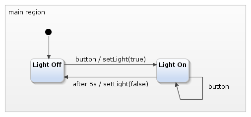

A very basic example for the Arduino platform that switches an LED on and off.
This example was used in an article on the website instructables.com. You can read the article here. It demonstrates how to get started with YAKINDU Statechart Tools and the Arduino platform and contains a timer service for the Arduino. You need to have an Arduino plugin, as described in the example "Arduino traffic light".
